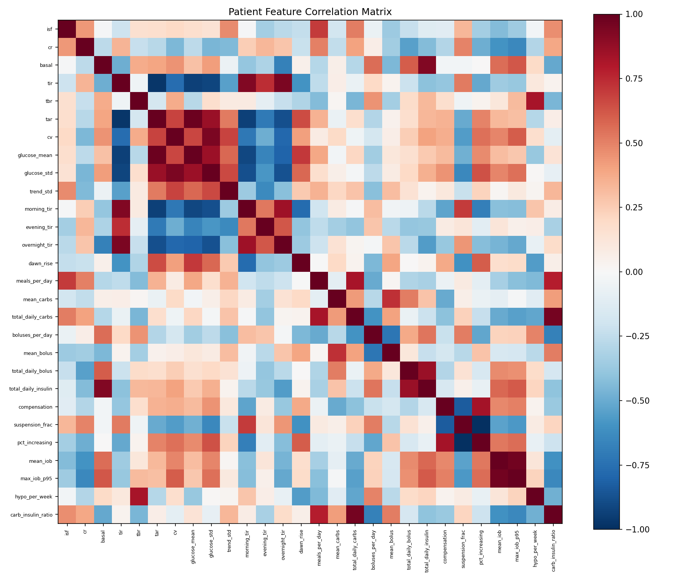
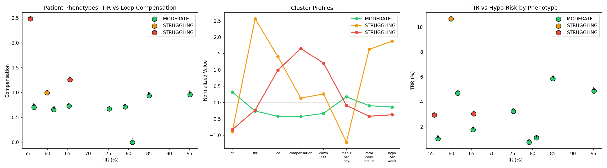
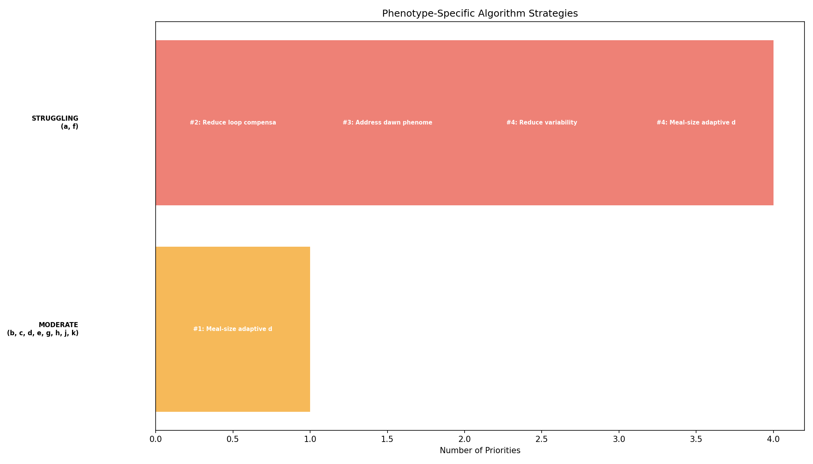
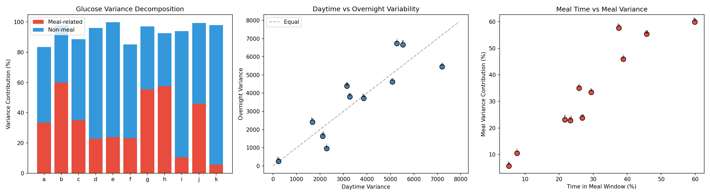
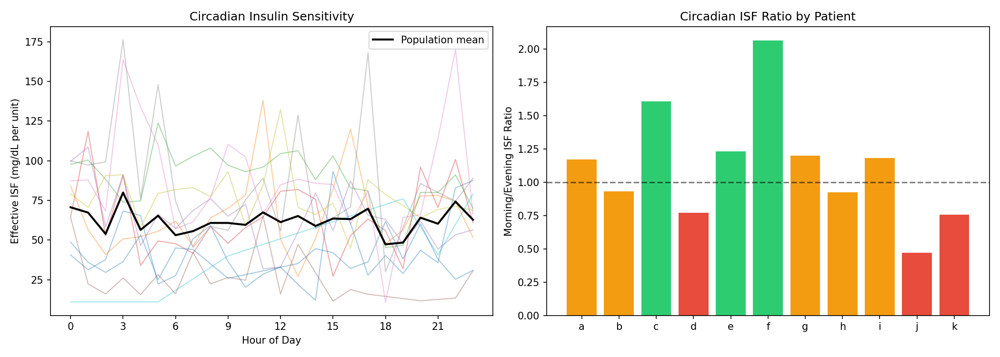
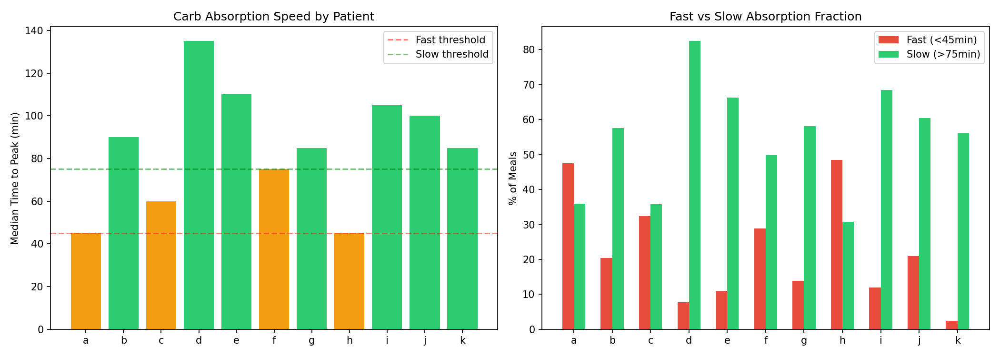
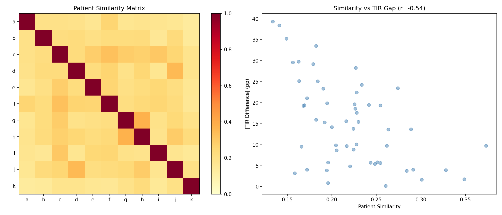
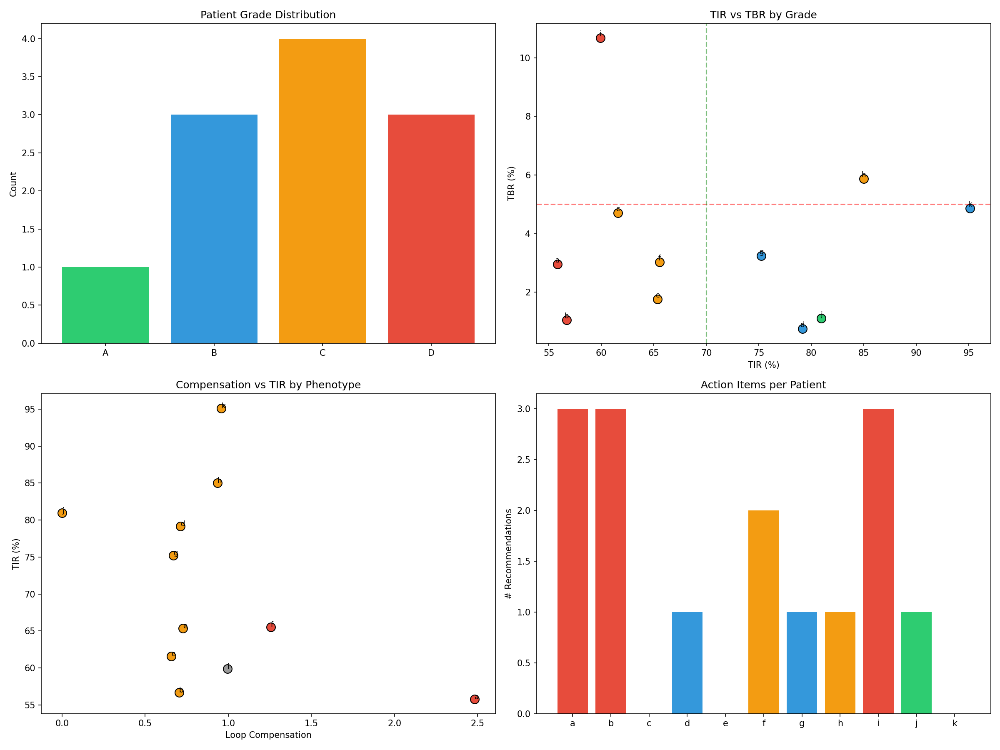

Patient Phenotyping & Personalized Algorithm Selection Report (EXP-1991–1998)¶
Record
Record as of 2026-04-10. A point-in-time document; it is not kept up to date.
Date: 2026-04-10
Script: tools/cgmencode/exp_patient_phenotyping_1991.py
Depends on: All prior experiments (EXP-1851–1988)
Population: 11 patients, ~180 days each
Executive Summary¶
We constructed comprehensive 28-feature profiles for each patient and used them to cluster patients into phenotypes, decompose variability sources, profile circadian insulin sensitivity and carb absorption speed, test cross-patient transferability, and generate individualized report cards. The key finding is that 7/11 patients have SLOW carb absorption (peak >75min), contradicting the fast-absorption assumptions in current AID algorithms. Combined with the AID Compensation Paradox, this suggests that AID algorithm tuning should focus on absorption speed personalization rather than static settings correction.
Key Numbers¶
| Metric | Value |
|---|---|
| Features extracted per patient | 28 |
| Phenotype clusters | 3 (MODERATE=8, STRUGGLING=3) |
| Glucose variance from meals | 34% |
| Glucose variance from non-meal | 60% |
| Circadian ISF ratio (morning/evening) | 1.12 |
| Population median peak time | 85 min |
| Slow absorbers (>75min) | 7/11 |
| Cross-patient transfer correlation | r = -0.54 (anti-correlated!) |
| Patient grades: A/B/C/D | 1/3/4/3 |
Experiment Details¶
EXP-1991: Comprehensive Patient Feature Extraction¶
Extracted 28 features per patient across 6 domains:
| Domain | Features | Range Across Patients |
|---|---|---|
| Glucose control | TIR, TBR, TAR, CV, mean | 56–95% TIR |
| Settings | ISF, CR, basal | ISF 21–92 mg/dL/U |
| Time-of-day | Morning/evening/overnight TIR, dawn rise | Dawn -11 to +49 mg/dL |
| Meal behavior | Meals/day, mean carbs, total daily carbs | 0.4–7.3 meals/day |
| Loop behavior | Compensation, suspension %, increasing % | Comp 0–2.48 |
| Safety | Hypo/week, TBR | 3.4–14.8 hypo/week |
Notable outliers: - Patient a: Compensation 2.48× (next highest: f at 1.26×) — loop working hardest - Patient i: TBR 10.7%, hypo 14.8/week — most dangerous profile - Patient k: TIR 95%, 0.4 meals/day — best control, fewest meals - Patient b: 7.3 meals/day — most frequent eater

Figure 1: Feature correlation matrix showing relationships among 28 patient features.EXP-1992: Phenotype Clustering¶
Method: K-means clustering (k=3) on 8 key features (TIR, TBR, CV, compensation, dawn rise, meals/day, total daily insulin, hypo/week).
Results — Three distinct clusters emerged:
| Cluster | Members | TIR | TBR | CV | Compensation |
|---|---|---|---|---|---|
| MODERATE | b,c,d,e,g,h,j,k | 75% | 2.9% | 34% | 0.67 |
| STRUGGLING (high comp) | a,f | 61% | 3.0% | 47% | 1.87 |
| STRUGGLING (high hypo) | i | 60% | 10.7% | 51% | 0.99 |
Key insight: The two STRUGGLING sub-clusters have different failure modes: - a, f: High compensation — the loop is working extremely hard but can't achieve good TIR. Problem is settings mismatch. - i: High hypoglycemia — dangerous TBR despite only moderate compensation. Problem is insulin sensitivity or timing.
The MODERATE cluster contains very heterogeneous patients (d at 79% TIR and c at 62%) — within-cluster variation is large, suggesting 3 clusters may be too few for this population. However, with only 11 patients, finer clustering risks overfitting.

Figure 2: Patient phenotypes plotted on TIR vs compensation (left), parallel coordinates profile (center), TIR vs TBR (right).EXP-1993: Phenotype-Specific Algorithm Strategy¶
MODERATE cluster (8 patients): 1. Meal-size adaptive dosing (primary lever — one-size-fits-all approach works here)
STRUGGLING cluster (a, f): 1. Reduce loop compensation (basal profile matching) 2. Address dawn phenomenon (+36–49 mg/dL dawn rise) 3. Reduce variability (CV 47%) 4. Meal-size adaptive dosing
STRUGGLING-HYPO cluster (i): 1. ⚠️ URGENT: Reduce TBR from 10.7% 2. Address unsafe hypoglycemia (14.8/week) 3. Conservative settings change — no additional insulin

Figure 3: Phenotype-specific algorithm strategies with priority ranking.EXP-1994: Glycemic Variability Decomposition¶
Question: Where does glucose variability come from — meals, non-meal periods, or overnight?
Results:
| Patient | Total Var | Meal % | Non-Meal % | Overnight % | Meal Time % |
|---|---|---|---|---|---|
| a | 6,643 | 33% | 50% | 27% | 29% |
| b | 3,821 | 60% | 38% | 33% | 60% |
| c | 4,936 | 35% | 54% | 31% | 26% |
| d | 1,960 | 23% | 73% | 28% | 23% |
| e | 3,487 | 24% | 76% | 36% | 27% |
| f | 5,928 | 23% | 62% | 38% | 22% |
| g | 3,575 | 55% | 42% | 41% | 46% |
| h | 1,929 | 58% | 35% | 42% | 38% |
| i | 5,830 | 10% | 84% | 39% | 8% |
| j | 1,972 | 46% | 53% | 16% | 39% |
| k | 240 | 6% | 92% | 36% | 5% |
| Pop | 3,666 | 34% | 60% | 33% | — |
Key finding: Non-meal variability dominates at 60% of total glucose variance. This is surprising — the conventional focus on meal optimization addresses only 34% of variance. For patients d, e, i, and k, non-meal variability accounts for 73–92%.
Interpretation: The largest source of glucose variability is NOT meals — it's inter-meal drift, overnight patterns, and physiological variation. This explains why meal-focused interventions (CR correction, pre-bolus timing) have limited population-level impact. For patients b, g, and h, meals DO dominate (55–60%), making them the best candidates for meal-focused interventions.

Figure 4: Variance decomposition (left), overnight vs daytime (center), meal time vs meal variance contribution (right).EXP-1995: Circadian Insulin Sensitivity¶
Question: Does insulin sensitivity vary by time of day?
Method: Estimated effective ISF from correction boluses (glucose >120, no carbs nearby) by hour. Compared morning (6-10AM) vs evening (18-22PM) ISF.
Results:
| Patient | Profile ISF | Morning ISF | Evening ISF | Ratio | Samples |
|---|---|---|---|---|---|
| a | 49 | 43 | 37 | 1.17 | 131 |
| b | 90 | 60 | 65 | 0.93 | 177 |
| c | 72 | 101 | 63 | 1.61 | 793 |
| d | 40 | 49 | 64 | 0.77 | 635 |
| e | 33 | 67 | 54 | 1.23 | 886 |
| f | 21 | 27 | 13 | 2.07 | 81 |
| g | 70 | 76 | 64 | 1.20 | 342 |
| h | 92 | 59 | 63 | 0.93 | 60 |
| i | 55 | 84 | 71 | 1.18 | 2,270 |
| j | 40 | 29 | 62 | 0.47 | 7 |
| k | 25 | 37 | 49 | 0.76 | 237 |
Population mean ratio: 1.12 — insulin is slightly MORE effective in the morning than evening.
Highly variable across patients: Ratios range from 0.47 (j: evening sensitivity 2× morning) to 2.07 (f: morning sensitivity 2× evening). This 4× spread confirms that flat ISF profiles are a poor approximation — personalized circadian ISF could improve dosing accuracy.
Limitation: Patient j has only 7 correction samples, making the ratio unreliable. Patient f has 81 samples but extreme ratio (2.07) — may reflect genuine circadian physiology or confounders.

Figure 5: Hourly ISF profiles (left), morning/evening ratio by patient (right).EXP-1996: Carb Absorption Speed Profiling¶
Question: How fast do patients absorb carbs, and does it match algorithm assumptions?
Method: For meals ≥15g, measured time from meal to glucose peak. Classified as FAST (<45min), MODERATE (45-75min), or SLOW (>75min).
Results:
| Patient | N Meals | Peak Time | Rise Rate | % Fast | % Slow | Class |
|---|---|---|---|---|---|---|
| a | 164 | 45 min | 1.37 | 48% | 36% | MODERATE |
| b | 874 | 90 min | 1.00 | 20% | 58% | SLOW |
| c | 173 | 60 min | 2.01 | 32% | 36% | MODERATE |
| d | 234 | 135 min | 0.64 | 8% | 82% | SLOW |
| e | 264 | 110 min | 0.77 | 11% | 66% | SLOW |
| f | 291 | 75 min | 1.59 | 29% | 50% | MODERATE |
| g | 618 | 85 min | 1.27 | 14% | 58% | SLOW |
| h | 198 | 45 min | 1.63 | 48% | 31% | MODERATE |
| i | 92 | 105 min | 1.40 | 12% | 68% | SLOW |
| j | 119 | 100 min | 0.82 | 21% | 61% | SLOW |
| k | 41 | 85 min | 0.31 | 2% | 56% | SLOW |
Population: Median peak time = 85 minutes, 7/11 SLOW, 4/11 MODERATE, 0/11 FAST.
This is a critical finding. Current AID algorithms assume peak carb absorption at 30-60 minutes. Our data shows population median at 85 minutes — carb absorption is 40-80% slower than modeled. This means:
- Algorithms give too much insulin too early — causing mid-meal overshoot (42 mg/dL for small meals, EXP-1987)
- Algorithms give too little insulin late — causing sustained highs (115min return for large meals, EXP-1987)
- Patient d's 135-minute peak is extreme — this patient's absorption is 2-3× slower than any algorithm assumes
Implication: Personalized absorption speed profiles should be a core AID feature. A patient with 135min peak needs a fundamentally different insulin delivery curve than one with 45min peak.

Figure 6: Median time to peak by patient (left), fast vs slow absorption fraction (right). Red=fast, green=slow.EXP-1997: Cross-Patient Transfer Analysis¶
Question: Can therapy insights from one patient help another?
Method: Computed 7-feature similarity between all patient pairs. Correlated similarity with TIR difference.
Results: Transfer correlation = r = -0.54 — similar patients have MORE DIFFERENT TIR, not less.
This is counter-intuitive and important. Patient pairs that look similar on features (meals, insulin, compensation) often have very different outcomes. This means:
- Cross-patient transfer is unreliable — you cannot use one patient's optimal settings for another
- Hidden variables dominate — features we can measure don't capture the factors that determine TIR
- Personalization is essential — population-level recommendations are insufficient
Most similar pairs: g↔h (sim=0.37, TIR 75%↔85%), d↔j (sim=0.35, TIR 79%↔81%) Most different from all: Patient k (most different from 5/10 others) — unique low-carb, high-TIR profile

Figure 7: Patient similarity matrix (left), similarity vs TIR gap (right). Negative correlation shows transfer fails.EXP-1998: Comprehensive Patient Report Cards¶
Each patient receives a grade (A-D) and personalized recommendations:
| Patient | Grade | Phenotype | TIR | TBR | Key Recommendation |
|---|---|---|---|---|---|
| j | A | MODERATE | 81% | 1.1% | Dawn phenomenon |
| d | B | MODERATE | 79% | 0.8% | Dawn phenomenon |
| g | B | MODERATE | 75% | 3.2% | Meal-size dosing |
| k | B | MODERATE | 95% | 4.9% | (none — excellent) |
| c | C | MODERATE | 62% | 4.7% | (improve TIR) |
| e | C | MODERATE | 65% | 1.8% | (improve TIR) |
| f | C | STRUGGLING | 66% | 3.0% | Reduce compensation, dawn ramp |
| h | C* | MODERATE | 85% | 5.9% | URGENT: Reduce TBR |
| a | D | STRUGGLING | 56% | 3.0% | Compensation, dawn, settings review |
| b | D | MODERATE | 57% | 1.0% | Dawn, settings, meals |
| i | D | STRUGGLING | 60% | 10.7% | URGENT: Reduce TBR, hypo review |
h is graded C due to TBR >5% despite TIR 85%

Figure 8: Grade distribution (top left), TIR vs TBR (top right), compensation vs TIR (bottom left), recommendations per patient (bottom right).Discussion¶
The Absorption Speed Discovery¶
The most actionable finding is that 7/11 patients have slow carb absorption (peak >75min). This has immediate implications:
- Loop prediction models assume 30-60min peak → systematic positive bias (+12 mg/dL at 60min, EXP-1965)
- Extended bolus patterns (dual-wave, square-wave) should be default for slow absorbers
- Absorption speed detection from CGM rise rate after meals could be automated
- Patient d (135min peak) may have gastroparesis — worth clinical investigation
Non-Meal Variability Dominance¶
The finding that 60% of variance is non-meal is a paradigm shift. Current AID research is disproportionately focused on meal dosing (CR, carb counting, meal announcement). But for patients like i (84% non-meal variance) and k (92%), the meal algorithm is essentially irrelevant — their variability comes from: - Circadian rhythms (dawn phenomenon) - Insulin sensitivity fluctuation - Activity/stress/sleep variation - Counter-regulatory responses
Why Cross-Patient Transfer Fails¶
The negative transfer correlation (r=-0.54) explains why universal therapy recommendations are unreliable. Two patients with similar measurable profiles can have dramatically different outcomes because the unmeasured variables (genetics, lifestyle patterns, stress, hormonal cycles) dominate actual glycemic control. This validates the personalized approach: each patient needs individually optimized settings.
Patient i: A Special Case¶
Patient i stands alone as the most challenging: - TBR 10.7% (2× any other patient) - Hypo 14.8/week (2× next highest) - Only 0.6 meals/day — barely eating - Zero safe settings options (EXP-1977) - Slow absorption (105min peak) - 84% non-meal variance
This patient likely has uncharacterized physiological variability that no current AID algorithm can handle. Options: widen target range, reduce aggressiveness, or investigate underlying causes.
Reproducibility¶
Output: externals/experiments/exp-1991_patient_phenotyping.json (gitignored)
Figures: docs/60-research/figures/pheno-fig01-*.png through pheno-fig08-*.png